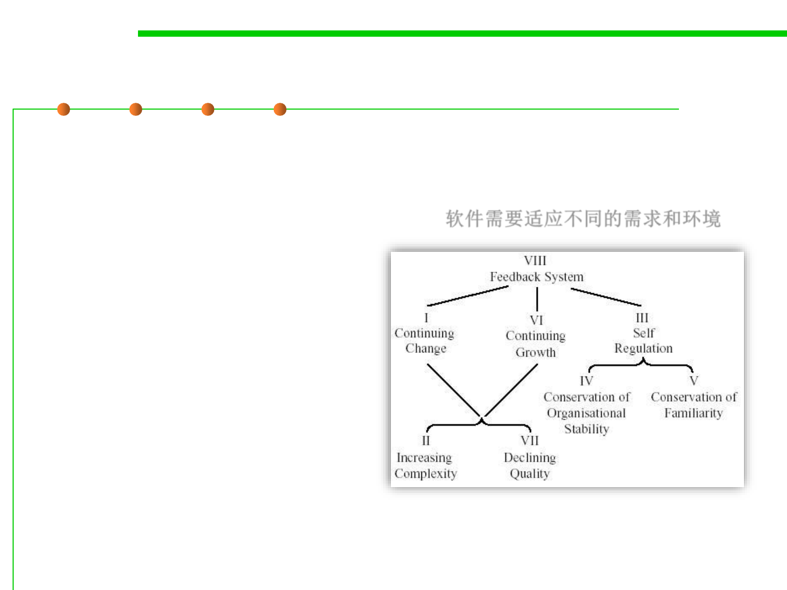

6.1 Metrics and Construction Principles for Maintainability
Lehman’s Laws on Software Evolution
▪ An E-program is written to perform some real-world activity; how
it should behave is strongly linked to the environment in which it
runs, and such a program needs to adapt to varying requirements
and circumstances in that environment 软件需要适应不同的需求和环境
▪ Eight laws were formulated：
– Feedback System
– Continuing Change
– Continuing Growth
– Declining Quality
– Increasing Complexity
– Self Regulation
• Conservation of Organizational Stability
• Conservation of Familiarity